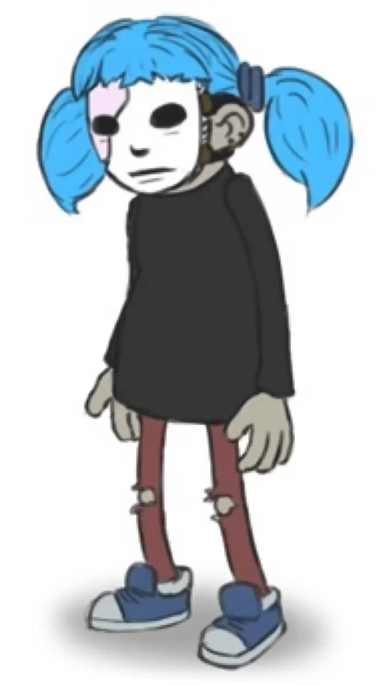
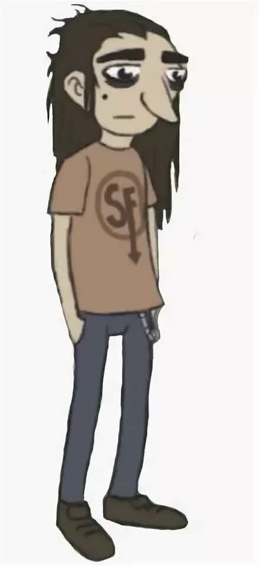
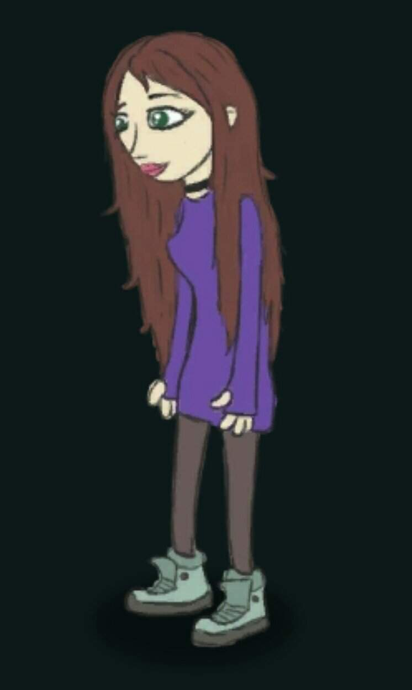

| Главные герои | ||
|---|---|---|
|
Сал Фишер Главный герой с которого собственно и начинается повествование. |
Ларри Джонсон Лучший друг Сала, познакомились когда Салли переехал. |
Эшли Кэмбелл Подруга Ларри с детства позже познакомилась с Салли и начали дружить. |